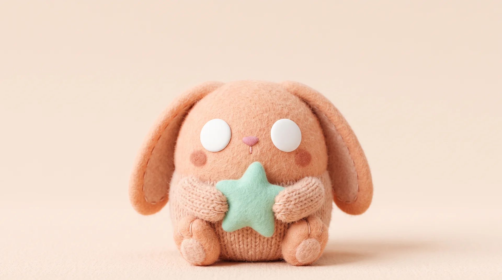

softwork
Work
Studio
Lab
Say hi
got a soft spot?
small ideas,
big hugs.
A tiny studio making brands people want to hold on to.
let's make something
you'll want to hug*
*no actual hugging required.
move your cursor · tap on mobile